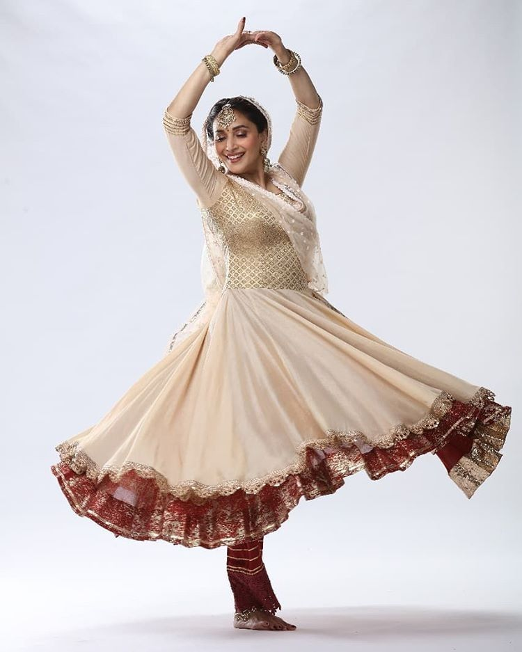
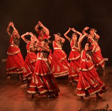
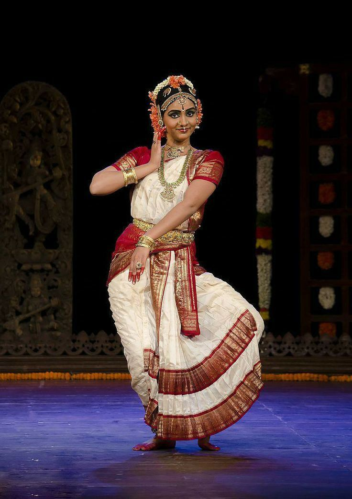
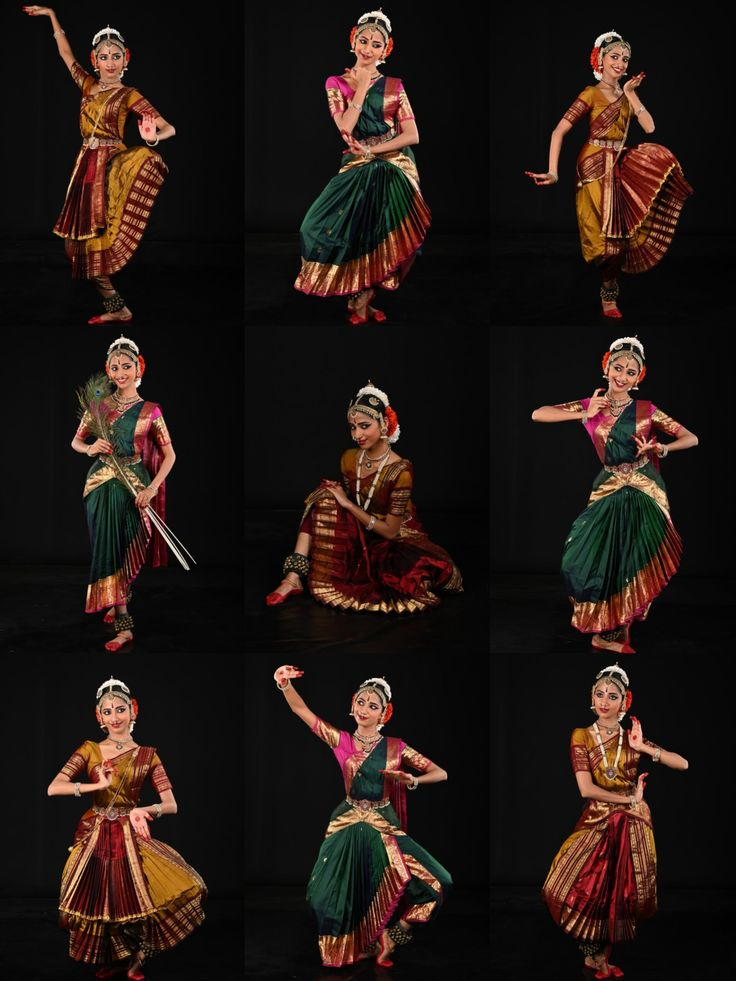
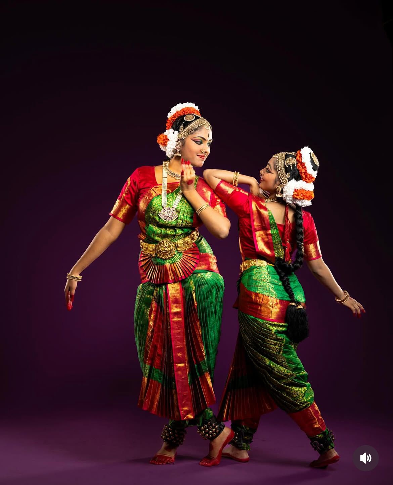

Kathak is one of the major classical dance forms of India, originating from North India. The name Kathak comes from the word "Katha", meaning story, and the dancers are known as storytellers.
Kathak combines rhythmic footwork, fast spins (chakkars), expressive gestures, and graceful movements. It is performed with classical music and often includes storytelling based on mythology and history.
The dance is known for its intricate footwork enhanced by ankle bells (ghungroo) and expressive eye movements.
Kathak began as a temple dance performed by storytellers who narrated tales from epics like the Ramayana and Mahabharata. Later, it developed in royal courts, especially during the Mughal period, gaining elegance and refinement.
Tatkar: Basic footwork patterns.
Chakkars: Fast spins.
Abhinaya: Expression and storytelling.
Ghungroo: Musical ankle bells.



